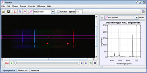

This collection introduces several Tracker spectroscopy experiments suitable for introductory optics labs. The spectra, produced by a diffraction grating in front of the camera lens, include two laser spots with known wavelengths for calibration. Tracker's line profile tool generates a "live" plot of relative intensity versus wavelength, enabling students to interactively explore the spectra in detail.
